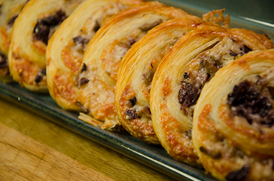

Kick-ass goda olivsnittar

Ingredienser
1 burk mixade oliver. Försök hitta urkärnade. Det gör livet lättare! Burken vi köpte innehöll totalt 290 g varav 130g oliver.
1 pkt smördeg.
150 g lagrad prästost (t ex 1878 svart)
1 ägg
Tillagning
1. Hacka oliverna och riv osten. Blanda i en skål.
2. Rulla ut smördegen på smörpapper. Fördela röran på smördegen. Håll lite marginal till kanterna så blir det lättare att rulla. För att kanterna bättre ska hålla ihop pensla med ägg.
3. Låt stå kallt en stund. Skär upp i bitar (ca 1 centimeter).
4. Gratinera i ung 225 grader i 10-15 minuter. Severas varma.
Rullen kan med fördel förberedas dagen före och förvaras i kylskåp. Vänta med att skära upp degen och tills du ska gratinera.